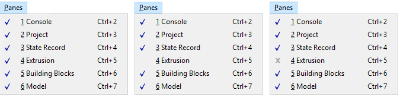
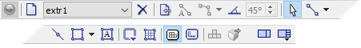
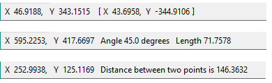

窗格元素
标题栏和菜单
标题栏右侧有 3 或 4 个按钮，具体取决于窗格是停靠还是浮动。
| 停靠 | |
| 浮动 |
- 三角形按钮显示窗格菜单。
- 第二个按钮隐藏该窗格。*
- 浮动标题栏中的第三个按钮可将窗格最大化，或将其恢复为先前的大小。
- 最后一个按钮关闭该窗格。*
注意
*隐藏与关闭的区别在于：关闭的窗格实际上被“销毁”，不再占用计算机资源。隐藏的窗格虽然不可见，但仍占用资源。这可能会拖慢与挤出相关的命令处理——如果您在控制台中发出这些命令，或从数据文件中读取这些命令，就可能出现这种状态。当隐藏的“挤出”窗格再次显示时，其视图状态信息也随之恢复。关闭的窗格重新打开时，视图状态信息不会恢复；它会把当前挤出集加载为默认视图。无论窗格是隐藏还是关闭，都必须使用“窗格”菜单来显示/重新打开挤出窗格。“挤出”窗格的三种状态（打开、隐藏、关闭）在“窗格”菜单中的表示方式如下所示。


在左侧菜单中，“挤出”窗格处于打开状态；在中间菜单中它处于隐藏状态；在右侧菜单中该窗格已关闭。
工具栏
与任何窗格一样，当该窗格处于活动状态时，其工具栏会作为主工具栏显示在程序菜单栏旁边。此外，按下“挤出”标题栏上的窗格菜单按钮并选择“显示工具栏”，即可在窗格内、其标题栏正下方显示或隐藏该工具栏。

各工具的含义如下。
| 图标 | 命令/模式 | 说明/注释 |
|---|---|---|
| 执行/停止切换按钮 | 执行或停止计算循环；更多信息请参阅 工具栏主题（Toolbar topic）。 | |
 |
添加新集合… | 创建一个新的挤出集。 |
| （列表） | 集合 | 这是所有挤出集的列表。其中显示当前活动的集。从列表中选择其他集，会将其设为当前活动的集并显示在窗格中。 |
 |
删除当前集合 | 删除当前活动的挤出集。 |
| 导入背景图像… | 导入背景图像（例如 .PNG 文件）或一组几何数据，后者可以是 .DXF、.STL 或 .GEOM 文件。 | |
 |
自动创建边 | 从背景几何自动创建边（前提是该几何由 .DXF、.STL 或 .GEOM 文件导入）。 |
| 合并所选边 | 将所选边合并为一条曲线。新边将包含多个控制点。 | |
 |
容差 | 设置合并边的容差，以指定新边跟踪原有各边的贴合程度（影响新边上控制点的数量）。 |
| 按折角选择边 | 启用后，允许选择折角范围内的多条边。 | |
| （列表） | 指定折角 | 向上或向下滚动以指定折角。 |
| 选择模式 | 选择对象（鼠标左键）或操作挤出视图（鼠标右键）。这是鼠标的默认模式。 | |
 |
点-边模式 | 该工具用鼠标左键创建点（也称为节点）和边，用鼠标右键选择和移动对象。 |
|
边参数 | 设置默认的边参数，例如沿边的网格单元数量或长度。 |
 |
控制点模式 | 在边上定义、移动和修改控制点（鼠标左键）；选择/移动任意对象（鼠标右键）。 |
 |
块体划分工具 | 从闭合多边形创建带结构化网格或非结构化网格的块体，或从块体内部、或沿某条边将带结构化网格的块体分割（鼠标左键）；选择/移动任意对象（鼠标右键）。 |
|
网格参数 | 设置结构化网格和非结构化网格的基本参数与高级参数。 |
 |
自动块体划分工具 | 从该集中存在的所有闭合多边形自动创建相应的块体。 |
| 高亮显示分组 | 在为点、边或块体指定分组后，该菜单将包含用于以绿色高亮显示您所选任意分组的命令。 | |
 |
自动划分网格单元… | 此命令提供用于对模型应用自动划分网格单元功能的选项。 |
| 构建视图 | 此切换按钮用于激活构建视图。 | |
 |
挤出视图 | 此切换按钮用于激活挤出视图。 |
 |
创建块体构建 | 从挤出器中的模型创建块体构建。 |
 |
挤出 | 该命令从挤出器模型创建网格单元。这些网格单元可在“模型”窗格或绘图窗格中查看。 |
 |
显示/隐藏 控制面板 | 切换 控制面板 的显示。有关详细信息，请参阅 工具栏主题（Toolbar topic）。 |
 |
显示/隐藏控件组 | 此按钮是一个下拉列表，其中列出此窗格类型可用的控件组；选择未勾选的项目可在控制面板中显示它，选择已勾选的项目可隐藏它。有关更多信息，请参阅工具栏主题（Toolbar topic）。 |
视图操作
- Ctrl+R 重置视图
- 在选择模式下，鼠标右键用于平移视图；在其他模式下，Shift 加鼠标右键用于平移视图
- 鼠标滚轮可放大和缩小视图
- Ctrl+Alt+L 缩放至所选对象
另请参见视图操作（View Manipulation）主题。
ESC 键
通常，ESC 键会取消当前操作并使鼠标回到选择模式。ESC 键还会取消鼠标拖动。
状态栏
主窗口的状态栏（左下角）显示与“挤出”窗格相关的信息。它会报告鼠标位置的模型坐标，并在用鼠标拖动点时报告该点的位置（置于方括号 [ ] 中）。
在添加新边的过程中，会显示该边与水平轴的夹角及其长度。
当选中 2 个点或选中一条边时，将显示这两点之间的距离。

| 这些内容对您有帮助吗？… | FLAC3D © 2019, Itasca | 原文更新于 2020 年 10 月 8 日 |